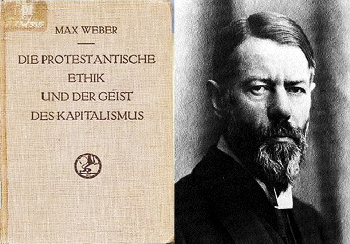

分享人：Rex Zhen
从事过很多不同的工作，锻工，报关员，画廊老板，出租车司机。目前身份是湾区IT男。以后也很难说。爱好很多，但没突出的。
分享书目：新教倫理與資本主義精神
维基百科把马克斯韦伯盖棺为政治经济学家、社会学家、哲学家，其实大学问家都是很难给贴标签地。其涉猎的领域大概包括经济，宗教，政治，和社会学。
他的成名作，学术名著《新教伦理与资本主义精神》，出版一百多年来，依旧熠熠生辉。
对于国人来讲，这本书的意义何在？剑桥社会系教授Sarah Franklin 对此书的评语可以借来用用，“若想从韦伯的书中找到解决当前社会问题的答案是不可能的，但却让人找到问题的根源所在，进而更深地理解社会。”
作者简介
马克斯·韦伯（Max Weber, 1864年4月21日—1920年6月14日）是德国的政治经济学家和社会学家，他被公认是现代社会学和公共行政学最重要的创始人之一。韦伯最初在柏林大 学开始教职生涯，并陆续于维也纳大学、慕尼黑大学等大学任教。他对于当时德国的政界影响极大，曾前往凡尔赛会议代表德国进行谈判，并且参与了魏玛共和国宪 法的起草设计。 韦伯的主要著作围绕于社会学的宗教和政治研究领域上，但他也对经济学领域作出极大的贡献。他的知名著作《新教伦理与 资本主义精神》是他对宗教社会学最初的研究，韦伯在这本书中主张，宗教的影响是造成东西方文化发展差距的主要原因，并且强调新教伦理在资本主义、官僚制 度、和法律权威的发展上所扮演的重要角色。韦伯并将国家定义为一个“拥有合法使用暴力的垄断地位”的实体，这个定义对于西方现代政治学的发展影响极大。他 在各种学术上的重要贡献通常被通称为“韦伯命题”。
时间和地址
6月14号，周日晚上6:30pm @635 High Street, Palo Alto

Comments
comments powered by Disqus